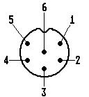

6-poliger DIN-AV-Stecker:
 Kerbe
IXI
5 1
O 6 O
O
4 2
O 3 O
O
1 - Schaltspannung
2 - Video
3 - Masse
4 - Audio links
5 - nicht belegt
6 - Audio rechts
5-poliger FBAS-Stecker:
 Kerbe
KerbeIXI
5 1
O O
4 2
O 3 O
O
1 - nicht belegt
2 - FBAS (Video)
3 - Masse
4 - nicht belegt
5 - nicht belegt
Und zum Schlufl die Pinbelegung des Monitorsteckers beim Macintosh
1 Rot GND
2 Rot Video
3 Composite Sync
4 Sense 0 (Monitor ID 1)
5 GrÅE Video (=Mono Video)
6 GrÅE GND
7 Sense 1 (Monitor ID 2)
8 NC (nicht belegt)
9 Blau Video
10 Sense 2 (Monitor ID 3)
11 Composite und VSync GND
12 VSync (Bildfrequenz)
13 Blau GND
14 HSync GND
15 HSync (Zeilenfrequenz)
Das ist ein zweireihiger Dsub 15 Anschlufl, man braucht fÅE den Anschlufl
an einen Multiscanmonitor, etc. generell einen Adapter bei den Apples.
Die Sensepins liegen bei dem Monitor fest und stellen die Betriebsart
ein, braucht man nur an Apple Macintosh Rechnern (c't 3/1993, S.245).
Kapitel Wie schliefle ich den Monitor an meinen Computer an, Seite 6